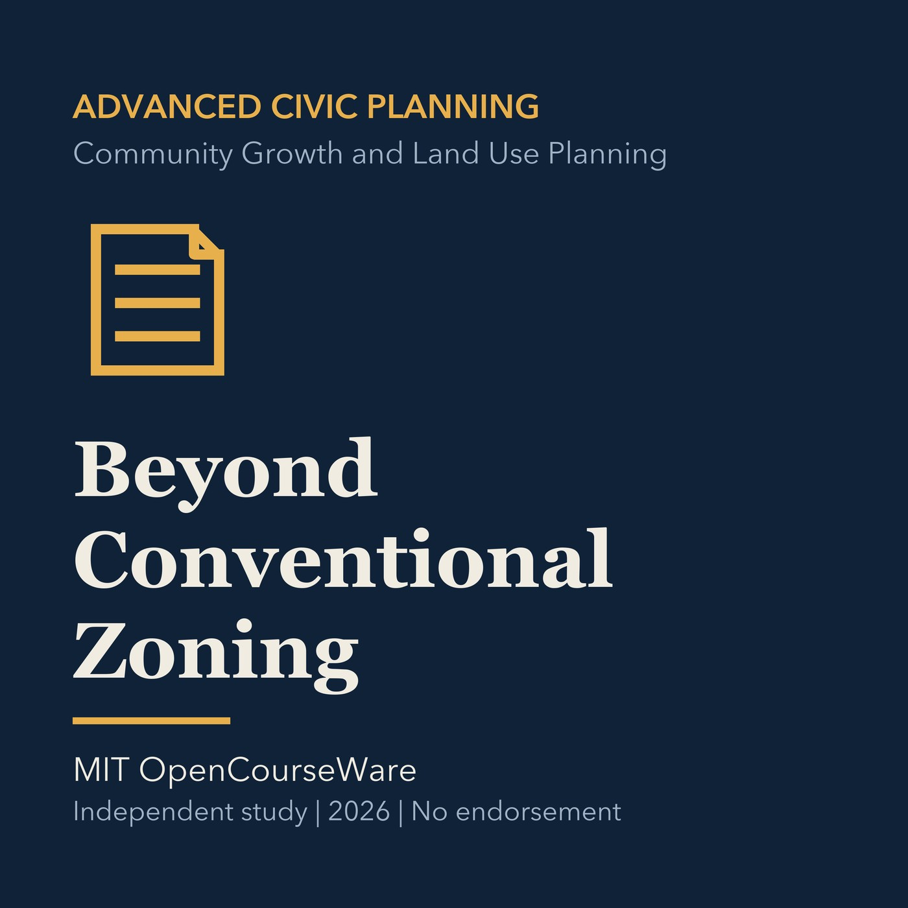

EPISODE 15
Beyond Conventional Zoning
Compares conventional zoning with form, performance, overlay, incentive, and hybrid tools.

- Stable GUID
6ff29fe0-adbc-552d-a5e1-f2b601241642- Release
- advanced-civic-planning-v2026.1
- SHA-256
d0bcb674a20f546aeddab9b1ff740ec68a4f891bf4533b3ad1ea019aff576947